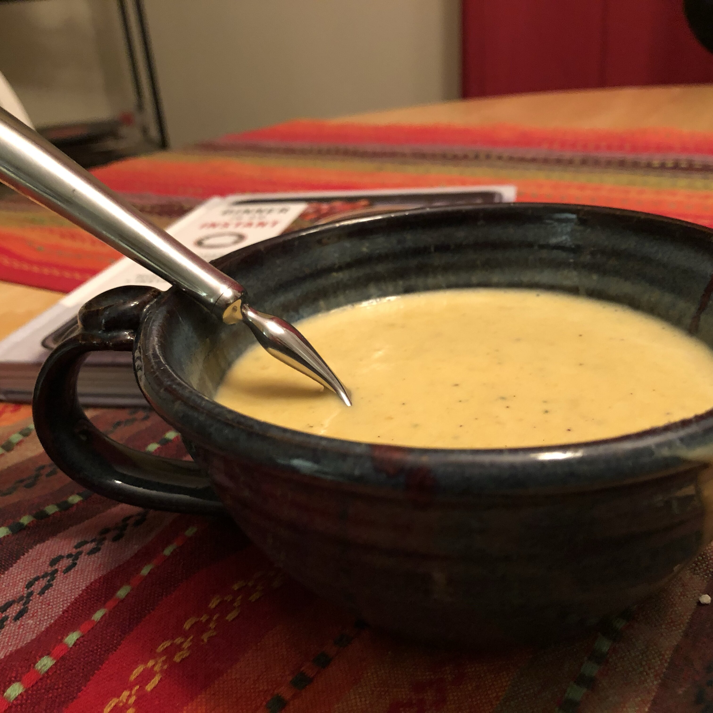

Butternut Squash Soup

Yummy for fall, butternut squash soup is a great recipe for this week.
Here's another paragraph gushing about how this is one of my favorite soup recipes.
Ingredients
- 6 tablespoons chopped onion
- 4 tablespoons margarine
- 6 cups peeled and cubed butternut squash
- 3 cups water
- 4 cubes chicken bouillon
- 1/4 tsp ground black pepper
- 1/8 tsp ground cayenne pepper
- 2 (8 oz) packages cream cheese
Steps
- In a large saucepan, saute onions in margarine until tender. Add squash, water, bouillon, marjoram, black pepper and cayenne pepper. Bring to boil; cook 20 minutes, or until squash is tender.
- Puree squash and cream cheese in a blender or food processor in batches until smooth. Return to saucepan, and heat through. Do not allow to boil.